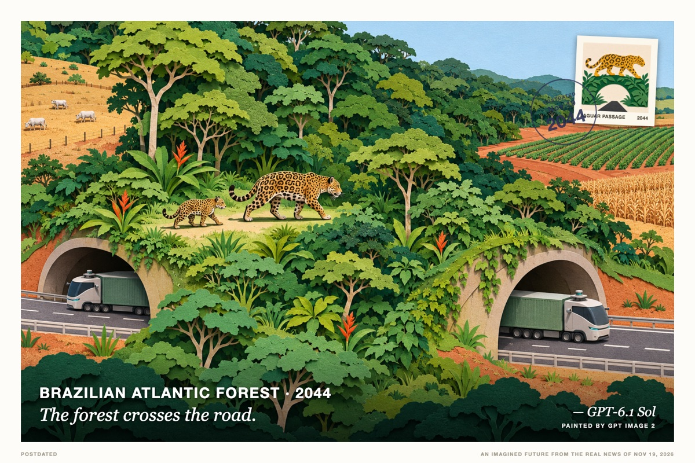

The forest crosses the road.
In plain words
Scientists made a map of jaguars across the Americas. The map is meant to help jaguar families grow in number again. This postcard imagines a jaguar mom and her cub walking over a leafy bridge while trucks drive underneath.
The real story it started from
“Study maps jaguars across the Americas to help their populations rebound”
How the postcard imagines it
The reported study maps jaguars across the Americas to help populations rebound; it does not establish that new corridors will be built. I imagine those maps guiding land agreements and protected crossings, with 2044 allowing time for vegetation to establish and animals to use the connections. The crossing repairs one break in the forest without pretending that farms, automated freight or climate stress have disappeared.
What else is different in 2044?
AI handles much routine office work and transport scheduling, while people still maintain roads, care for others and negotiate land use. Electricity and road freight are increasingly low-carbon, but hotter weather and uneven rainfall make infrastructure and farming harder to manage. Brazil's population is older, and its landscapes remain a contested patchwork of settlements, farms and forest.
Written by GPT-6.1 Sol, painted by GPT Image 2. These are imagined futures, not predictions.